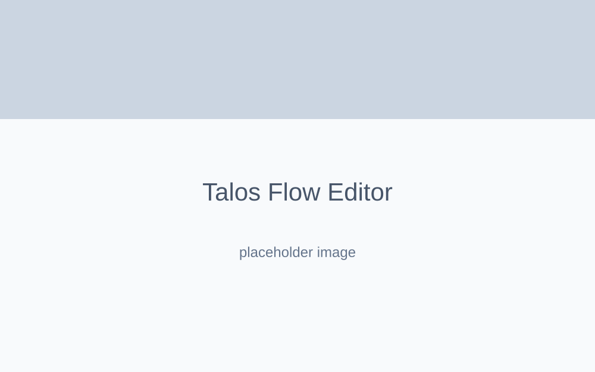

BK Talos Dashboard
Dashboard corporativo voltado para processamento de workflows visuais (grafos) e orquestração de rotinas complexas.
Contexto & Problema
Em ambientes corporativos com processos densos, a visualização de automações é frequentemente feita através de interfaces em lista, difíceis de interpretar quando existem milhares de etapas lógicas. A falta de uma visualização baseada em grafos (nodes e edges) dificultava a auditoria das automações gerenciadas pelo motor de IA.
Objetivo
Construir a camada visual (Dashboard) do Protocolo Talos, permitindo que usuários criem, editem e visualizem workflows em formato de diagrama interativo, além de fornecer métricas gerenciais em tempo real sobre a utilização dos modelos de Inteligência Artificial.
Arquitetura & Tecnologias
- Framework Principal: Next.js com foco pesado na renderização do lado do cliente para as ferramentas visuais.
- Visualização de Grafos: React Flow para construir o editor de nodes drag-and-drop.
- Conectividade: Integração com Supabase (Realtime) para atualizações instantâneas no dashboard sem necessidade de polling.
- Pagamentos: Integração server-side com Stripe para processar o billing das métricas de IA consumidas no painel.
Decisões Técnicas & Desafios
O React Flow introduziu um nível severo de complexidade de estado, pois o gerenciamento das posições X/Y de centenas de nodes precisa estar em sincronia com o estado lógico no banco de dados. Foi implementado um debounce customizado no salvamento, mitigando o sobrecarregamento das chamadas de API.
Galeria & Mockups

Conclusão
A separação estrita entre o Talos Dashboard (Camada Visual Client-heavy) e o Talos Engine (Camada Servidor) permitiu que a equipe escalasse as interfaces gráficas sem medo de degradar a performance das filas de processamento concorrentes da API.